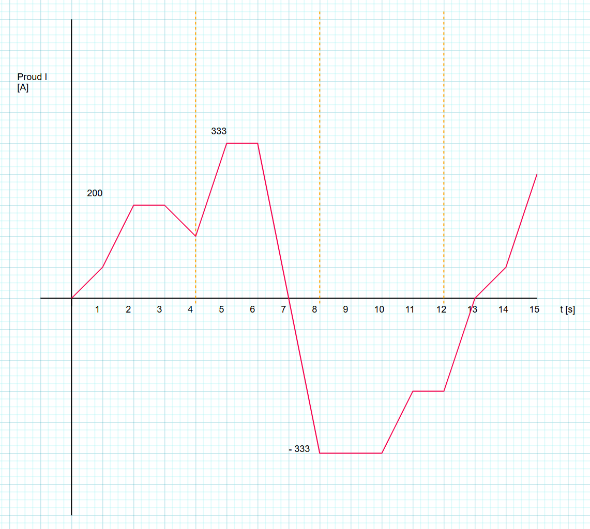

Vysoká hmotnost baterie v elektromobilu neznamená jen větší nároky na výrobní infrastrukturu, ale přináší s sebou i další důležitou otázku: jak bezpečně uchovat a řídit tak velké množství energie přímo ve vozidle. Lithium-iontová baterie totiž neslouží jen jako pasivní zásobník energie, ale je aktivní součástí, jejíž stav se neustále během jízdy i nabíjení mění.
Aby baterie pracovala spolehlivě a bezpečně, je elektromobil vybaven tzv. Battery Management Systemem (BMS). Jde o elektronický řídicí systém, který funguje jako „dozor“ nad baterií – průběžně sleduje napětí jednotlivých článků, proudy, teplotu i stav nabití a zajišťuje, že žádná část akumulátoru nepřekročí bezpečné provozní limity. Bez BMS by hrozilo přehřívání, zrychlené stárnutí baterie nebo v krajním případě její vážné poškození.
Nedílnou součástí bezpečnosti baterie je také účinné chlazení. Při vysokém zatížení nebo rychlém nabíjení se baterie zahřívá a bez řízeného odvodu tepla by se mohla dostat mimo optimální teplotní rozsah. Moderní elektromobily proto využívají kapalinové chladicí systémy, které udržují baterii v ideálních podmínkách. Právě spolupráce BMS a chlazení je klíčová pro bezpečný provoz elektromobilu, dlouhou životnost baterie i ochranu posádky vozidla.
Použijte vzorec níže k výpočtu teploty v diskrétních krocích po 1 sekundě a vyberte pravdivý výrok.
… teplota baterie v aktuálním časovém kroku [°C]
… teplota baterie v následujícím časovém kroku [°C]
… délka časového kroku [s]
… tepelná kapacita baterie [J/K]
… proud baterie v daném časovém kroku [A]
… vnitřní odpor baterie [Ω]
… součinitel tepelného přestupu do okolí [W/K]
… teplota okolí [°C]
Vnitřní odpor packu:
Tepelná kapacita packu:
Pasivní chlazení do okolí:
Okolí:
Start:
Krok:
